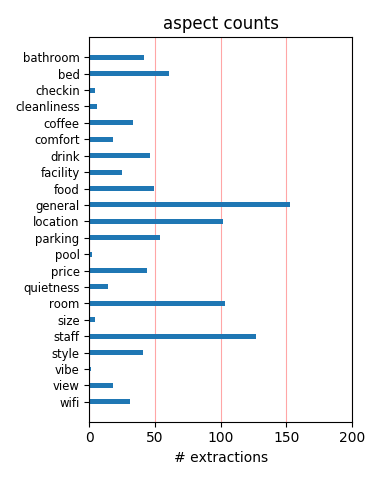
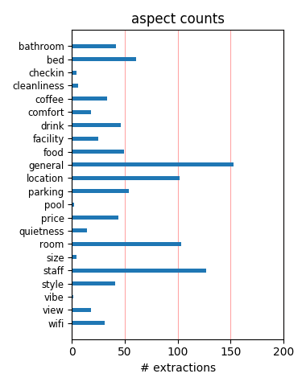

The hotel was lovely. It was in a great location and the bed was super comfortable. Normally I don't go to the hotel restaurant, but Tulio has some of the best food I've ever had. Plus there's a free wine reception every night from 5-6 in the lobby.
Staff friendly, and very helpful. Loved the Arnold Palmers, and the wine tasting. Loved the front area where we could relax, and chat with other guests. Location perfect. Walking distance to everywhere we wanted to go. Rooms clean and had everything we needed.
This hotel really packs and punch for the price. Nice location by library and downtown, great evening wine tasting, and very cool staff. I traveled with my husband and two small children and they even made my kids feel special - which doesn't always happen at a boutique hotel.
Stayed one night on business trip. Great experience - really comfortable bed - good mattress and soft pillows. Easy check in and out. Great style - it's a Kimpton! Didn't eat at Tulio, but the place looked good and busy. Will stay there again and have no hesitation in recommending
Great hotel, Great staff! Tulio restaurant next door wonderful as well! Good location, walking distance to everything we wanted to see (Safeco, market, waterfront, grey line bus tour) . Will be our "go to" hotel in Seattle from now on. Thanks Vintage Park from your friends in Texas!!
We had a great weekend. The hotel is situated within walking distance to everything...and if you want to ride it is a short cab ride. We enjoyed the evening wine tastings. The rooms were clean and perfect sized. The staff was friendly and ready to serve their guests as needed. A great place to stay!
Was my second stay - and just as nice as the first. Huge rooms, great location, tasteful decor, helpful staff, what more could you ask for? Had a favorite hotel in Boston that is similar, but they got "discovered" and now charge twice what I used to pay!!! So stay elsewhere so that does not happen to the Kimpton!!!!
Just returned from 3 days in Seattle where we stayed at the Hotel Vintage Park. Exceptionally friendly and knowledgeable staff who went out of their way to assist with any need. Trulio, the attached restaurant is outstanding and has a comfortable clubby atmosphere. The rooms are comfortable and well appointed. A wonderful small hotel in downtown Seattle.
Great hotel, friendly staff, and nice central location. I've read some reviews about the breakfast served at Tulio's as being good. Please don't waste your money, and head down to the Pike Market to check out Lowel's Diner. Enjoy the great view of the Sound while sipping a really good Bloody Mary. They also had the best corned beef and hash I've ever had.
This was a very nice hotel, very very clean, staff was accommodating. Only complaint: there are no vending machines so we were forced to buy overpriced minibar drinks the first night (not much of a complaint, huh?). Parking is outrageous in Seattle!! But the parking attendants at this hotel were extremely professional: fast and very friendly and efficient.
I've stayed at Kimpton hotel in the past but this experience was exceptional. From Lane at the front desk to Louis at the concierge desk the staff bent over backwards to help us. The rooms were clean and well appointed. The location is centrally located and the food and drinks were all top notch! I will stay here again without hesitation and recommend it to anyone traveling to Seattle.
Wonderfully cozy hotel. The entire staff was exceptional... kind and polite... very attentive in all aspects. Tastefully decorated, nice amenities, great location for venturing out in the downtown area. Their evening wine tasting in the lobby is a nice touch and gives you a chance to sample Washington's great wines. We highly recommend The Vintage Park and would return without thinking twice!
We have stayed at the Vintage Park many times and the service is consistently good. The staff are friendly, whether you are talking to the parking valet or the Front desk personnel. The rooms are clean and have a great ambiance, the location is very convenient to walk downtown or to all the great restaurants in the area. Tulio's restaurant on the ground floor is super for dinner or breakfast.
A wonderful small Hotel. Centrally located, walking distance to the market, the old part of town, shopping, waterfront, etc. Light and large rooms. Comfy beds and crisp linen. Wine tasting in the afternoon, coffee and tea in the morning. Nice restaurant and excellent late night bar menu. Very nice staff... I wanted to stay longer, one feels pampered there. (There is also a small fitness center.)
My husband stayed Dec 4-15(11 nights), I stayed 4. We both do a lot of business travel and I have to say this was our favorite hotel. The wine tasting was lovely every evening, great location, very confortable beds/pillows, very clean, homey atmosphere, helpful staff/cleaners. A very nice touch with the hot apple cider/coffee tea. It made our first trip to Seattle that much more enjoyable. Thanks
I recently stayed at the hotel for the recent Picasso exhibit at the SAM. The hotel is in a good location across from the library. For $8 I upgraded my room to a corner room with couch/sitting area. Its not luxurious, but for the total price of $160 found it was reasonably priced for the location. The bathroom is a little small, but all in all was a good value. Downside: Cost of valet parking was too high.
I was in Seattle last month for vacation and stayed at the Hotel Vintage Park hotel - we were completely impressed with how gorgeous the hotel was and so centrally located...easy walk to Pike Place Market!! Aside from that, the staff there, especially the Front Office Manager, Anthony, was so accomodating and welcoming! They really made us feel like VIPs! We will definitely be staying at Hotel Vintage on our next Seattle trip!!!
My partner and I stayed from December 31st until January 2nd. Best downtown Seattle hotel ever! the staff were consistently and genuinely friendly, the room was lovely. Room service was prompt and efficient, and the restaurant! Tulio had a fabulous menu as well as great food. I would go back in a heartbeat! Although the bed was comfortable, it was noisy and squeaky for two, and we needed an extra blanket. Otherwise a perfect stay!
What a fabulous hotel!! Excellent accommodations..Fantastic city view with windows that open [3inches then safety limitor]; 5 bed pillows that make a dreamy mountain range..a sink fixture that makes a mini waterfall--resembling the many water fountains around the city...umbrella and robes in the closet..all night menu for room service! Kind, Caring, and Amusing hotel staff...doggie bowl at drive and little bone biscuits near desk..:)
My husband and I booked a little anniversary weekend getaway to Seattle and this hotel was so perfect. The service was amazing - from valet service to front desk to concierge. We were touched that they remembered our anniversary. The room was stunning - took our breath away when we opened the door. We definitely will be staying here again. You cannot go wrong with this hotel and we walked to Quest field and back that night - 15 minutes away!
We stayed 2 nights in Seattle and chose this hotel after careful consideration. We were not disappointed - the service was friendly, the room was clean and the location was good. One minor drawback would be that the room felt a bit dark - I suppose it was 'mood lighting' but it was a bit too dark for us. The room was a good size and we enjoyed our stay there. The free internet is a massive bonus and the bathroom was lovely and big. (July 2011)
We had the fortune of bringing our dog with us to Seattle and elected to spend 3 ngihts at the Kimpton Vintage Park, which is a pet friendly hotel. We were very pleased this property. The comfortable bed, nicely appointed room and evening cocktails were very welcome. There were a number of dogs but you would never know it - as we couldn't hear, smell or sense other dogs were there. We were glad we tried the Kimpton and would highly recommend their hotels.
Stayed just one night at the hotel prior to leaving on an Alaskan cruise, and wish we could have stayed longer. Nice rooms, good beds with soft sheets, and clean as a whistle. What more could you ask? It is close, about five nice blocks to Pikes Street Market and in the middle of up scale shopping. Nice restaurant in the hotel too. Wine tasting every eve and fresh delicious coffee starting at 5:00am. Kimpton does a good job and allows your favorite pup, too!!
I stayed for 4 nights while a meeting was in town. The first night my room overlooked a parking lot, and even though it was a fifth floor room, it felt like I was looking into the headlights. They gave me a new room the next day and the whole stay was very easy. The hotel was clean and stylish and very well located The only downer was that the workout room could not have been smaller. It had room for a stack of dumb bells, a bike, treadmill and eliptical. That was it
I have stayed in a lot of hotels over the years but this is now my favorite! My granddaughter, her friend and I stayed there for several days and I have absolutely no complaint. The staff is amazing...from Rocket on! They were always so willing to help with anything we needed and took very good care of us...from the ladies behind the counter to the bellmen to the coffee ladies in the morning. We felt so at home. It was wonderful. Highly recommend! Thanks to all of you!
This was our second stay at the Vintage Park, the first was six years ago. We loved the hotel then, and we loved it this time too. The hotel and rooms are gorgeous, and the location is perfect--downtown but on a fairly quiet street. The free evening wine tasting is really something special--we were given wines that are not even available in stores yet. And the morning coffee is superb. I can also recommend the hotel restaurant, Tulio--the sweet potato gnocchi were amazing.
This is a nice "little" hotel. They have complimentary wine tasting most nights. The rooms are comfortable and clean. Having to subscribe to get free internet is a slight pain, but not a big deal (nbd). The little work out room is kind of a joke, but it is a clean and well appointed joke...the TV (w/headphones) on the exercise machines is nice. The hotel is kind of at one end of the part of town if you're walking around, but, again, nbd. The bartender of the restaurant was great.
We stayed for our 10th anniversary for two nights. The location was great for walking around to see the sights. The room was comfortable. The staff were accommodating. Being downtown at night there was the occasional police siren. I think this would be the case with any downtown hotel. We were on the 3rd floor, you could request a higher level room if this is an issue. There is a complementary local winery wine tasting from 5-6 in the lobby which was fun. Secure valet parking. Great Value.
This hotel is in a great location, but that is minor compared to the treatment you get here. No detail was too small to ensure our comfort. The nightly wine tastings were a treat, and we came away from them with many helpful suggestions from staff and other guests of places to visit in the surrounding area. We are very impressed with the Kimpton brand. As other reviewers have noted, make sure you join the InTouch program as it definitely gives you benefits during your stay.I highly recommend this hotel!
I recently attended a conference in Seattle, and was pleasantly surprised with my hotel selection given it was not in the conference's block of preferred hotels. Hotel Vintage Park was very quiet, in an excellent location, and the room was spectacular. However, I am not sure if it is the area or the individuals, but to me if I am paying $800+ I expect the front desk staff to treat me with respect. Unfortunately, with each contact they seemed very snotty and did not go out of their way at all to be helpful.
We stayed in this hotel for just one night. This hotel tries very hard to be accommodating, from the friendly staff to the wine voucher they provide to guests who missed the wine tasting. But the hotel itself is old. We got two handicap rooms. They are slightly larger than regular rooms. But we looked right into the dark and ugly valley behind the hotel. Also, the chimney in the valley made a lot of noises. We had problems with the old toilets too. This is a 4 star hotel. But it felt more like a crappy 3 star.
I've stayed here three times now for business and am always impressed. The hotel is a short walk to Pike Place market, shopping, and other tourist attractions. The staff is incredibly friendly, takes initiative, and helpful. The hotel itself is beautiful and unique. My rooms have always been exceptionally clean and quiet. A high quality for the value. I especially love the wine hour each evening. If you have a rental car, the valet service is great and has a quick turn around (unlike other city valet services).
This has been one of the best hotels I have stayed at, the beds were amazingly comfortable and the staff could not of been more friendly and helpful. Complementary wine night in a comfortable relaxed setting, they even brought out amazing appitizers for everyone. My experience there for the one night we were in Seattle could not of been better, I will choose this hotel from now on when visiting Seattle. It must tell you something when I have stayed at hundreds of hotels and this is the first review I have ever written. :)
Very good location in the down town of Seattle. Walking distance to the Waterfront, Food Market and Art Museum. Very professional and friendly service, including afternoon testing of Washington wines. The downstairs Italian restaurant is the good option for the evening, reservation recommended. The room and the bathroom we had, were quite small and dark, with an uninteresting view from the window. But the was the cheapest option in the internet rates. The pleasant surprise at the check out - free parking for the whole stay.
This was the best hotel we stayed in on an extended trip through Alaska and the Northwest. The price was very reasonable for a beautiful, historic hotel in a wonderful location. They even upgraded us on arrival just because a nicer room was available. Everyone on the staff from the valet parking to the front desk staff to the bellman went out of their way to be helpful. The free Haagen Daz delivered by room service and good morning coffee were a nice bonus. This is a special find if you want to get away from all the generic chain hotels.
Vintage Park is in a good location. The staff is friendly and knowledgable and always greeted us with a smile and hello upon returning to hotel. The 'king premier" room was large and the bed very comfortable plus clean and well-maintained. Enjoyed the wine hour in the cozy lobby and the great drinks/friendly service in Tulio's bar. Breakfast was also good. Loved the ambience as is usual for a Kimpton hotel. Definitely has more character and charm than the large and impersonal hotels. Would definitely recommend this hotel for singles or couples.
Very nice stay over Christmas weekend. Enjoyed this hotel's wonderful central downtown location -- nice walks toSeattle waterfront, aquarium, Pike Place market, Pioneer Square, etc. Friendly and helpful staff. Hosted wine reception a nice touch, also good coffee, tea, and splendid not-too-sweet hot chocolate. We read the New York Times Sunday paper on a rainy morning downstairs. Will gladly return next time. Directly across street corner from public library. Quick rapid transit train from airport stops close to hotel at University Street station.
My wife and I stayed at the Vintage Park one night while she attended the Flower and Garden show. This our favorite hotel in Seattle. The first thing I always notice is how friendly and attentive the staff is. The rooms are small (it is an old hotel) but nicely decorated. The beds are comfortable and pillows great. The Vintage Park is located in the center of the downtown near the Washington State Convention Center and Pacific Place. Their on-site restaurant, Tulio, is always good. We went their for breakfast and again, friendly and helpful staff.
The Vintage Park Hotel is a small hotel run by the Kimpton Group. It is conveniently located in downtown Seattle within walking distance of Pike Street Market, shopping, library, concert hall, metro, and numerous fine restaurants, including Tulio's, which is located in the hotel. Our room was comfy and clean although the bathroom was a little small. The afternoon wine tasting, featuring Washington vintners, was a bonus and very popular with the hotel guests. The concierge, Louis, was very helpful in arranging airport transportation. Oh, by the way, this hotel is pet friendly.
We stayed at this hotel two night on our travels to Seattle to watch a Seahawks game. Loved this charming hotel. The room was great, spacious and comfortable. We were able to catch the wine reception after the football game which is great feature. One unfortunate event on our second morning was that our shower broke and we had to wait for maintenance to fix it before starting the day. We were offered $10 off our meal charges in compensation, but it put us an hour behind, so I thought they could have offered a little more. But all in all it was a great place to stay in Seattle.
Great location; easy walking to shopping and restaurants. The staff was extremely friendly and the nightly wine/social hour was a lot of fun. It was a great way to meet other guests. Being an InTouch member with Kimpton allowed $10 worth of mini-bar items for free; nice surprise. Animal print bathrobes were provided; nice not having to bring one along. Not enough drawer space would be my only complaint and the bathroom was a bit small for the King Premium room. Great rate for the room; would definitely recommend this hotel and would be my first choice to return the next time I'm in Seattle.
This hotel is located right in the middle of downtown Seattle and is only a few blocks away from all the great eateries/bars/restaurants/pubs, etc. The staff are extremely friendly and very accommodating in fulfilling the guests' needs. The highlight of the stay simply has to be the free wine-tasting offered in the lobby each evening to guests. There are fabulous Washington wines that you can sample for an hour which is also the perfect time to talk to fellow-guests and socialize in a cozy setting by the fireplace. Overall, this hotel is a gem and I wouldn't miss an opportunity to stay here.
I booked a 3 night stay at the Hotel Vintage Park on Hotwire, and was very pleasantly surprised with the outcome. It was classified as a boutique hotel. I would classify this hotel as a bit old school in terms of the decor and furnishings, but very well maintained. Yet the staff was extraordinarily friiendly, helpful, and well trained to respond to every need. The Conceierge was amazing. The desk staff was probalby the most friendly/helpful/prepared that I've seen in this hotel category. I would be prepared to pay full price for this hotel, considering the service, location, and overall quality.
Stayed at the Vintage during New Years weekend. After checking in, we were advised that we were unable to use the lounge or the restaurant as it was New Years Day??? One of the 2 elevators did not work for our entire stay and when I questioned Kipton Hotels why were not recieving credit for our stay on their loyalty program we were told it was because we were paying too low of a rate. What kind of a loyalty program is that?? They have now managed too turn it in to a disloyalty program and as a season ticket holder to the Seahawks, we will now not be spending 8 weekends per year at a Kimpton Hotel!!!
From the moment we arrived till we left the following day, we felt at home. The staff are super friendly, helpful and made us feel welcome the minute we arrived. The comfort of the bed, duvet, pillows was beyond belief ... it was like I imagine sleeping in heaven would feel like. The wine tasting as a fun event, the location is convenient to all that Seattle has to offer and the dining was superb. I highly recommend this as your destination hotel any time you travel to Seattle. The main reason we chose this hotel was Kimpton has a great reputation and their Seattle hotel was beyond our expectations.
We recently stayed at the Hotel Vintage Park with our 4-year-old and 6-year-old. We requested the kids' welcome pack and our children were thrilled with the coloring books, crayons, party hats, jelly bellies and balloons. When the staff found out it was our 4-year-old's birthday, they delivered complimentary room service cookies, milk and fruit. In addition, the staff had signed a birthday card. It was so touching and very personal. We've always loved staying at the Vintage Park in the past, and it continues to impress us. It is a cozy, warm, lovely property,and the staff are so courteous and helpful.
The Hotel Vintage Park in Seattle WA is one of the best hotels in the entire city. My husband and I are extremely fond of Dogs and Wine which are two things that the hotel is does very well. Even if you are not particularly fond of dogs or wine, this would still be a fantastic place to stay because the staff takes care of each and every guest just the way YOU want to be treated. The decore gives you a feeling of elegance and the comforts of home.We have stayed here numerous times over the years and it never dissapoints. Walk to Pikes Place Market, Seattle Art Museum and many other great downtown venues and events.
My wife and I stayed here for two nights, just being tourists and enjoying downtown Seattle. From the time we checked in to the time we left, we felt well cared for. We signed up for their loyalty program to get the free wi-fi, and reserved through their website. We immediately got an email offer for a reduced fee room upgrade, depending on availability. We ended up with a great room for just a little more money, well worth it! Room service was very good, and quick! Everyone from the front desk to the restaurant was truly pleasant and helpful, like they were really glad we were there. We will certainly stay here again.
The staff at the desk were terrible. Bordering on rude. No convenience bar key provided, yet tried to charge for soda from room. No vending machines in hotel. The mandatory car parking service was good, but expensive ($28/day). We were given lower floor and had to deal with construction noise across the street and the on-ramp to the freeway. The hotel is convenient to the freeway. Whatever you do, don't go to the adjacent restaurant. We had to track down our waitress to get our bill so we could check out- she was in the lounge having HER breakfast!! Suggest you pay the higher price around the corner at the Crowne Plaza.
This hotel was perfect for our group- we did not want a pricey hotel that had no personality- we did want a convenient location of downtown Seattle and we got that hands down. The staff wascourteous and helpful and rooms and beds were well appointed and for the most part comfortable ( I personally had a bed that was uneven/slanted- but of the 4 couples there- I was the exception). The wine hour is a sweet and unexpected addition and the restaurant and bar make having a quick drink and meal so easy. Rates were more than fair, especially considering what everyone else was charging. We were very happy with our stay of 3 nights
My mother, 13 year old daughter and I spent 5 days at the Vintage Park. The room is small and the carpet IS garish, but some how it all combines to give a cozy and comfortable elegance. The staff were gracious to us, from booking, to accepting a package for me before my arrival, to ordering food in and charging it to the room for my daughter after the hotel restaurant had closed (though this was definitely outside thier normal operating procedures!) when she chose to stay in the room instead of coming to dinner with her grandmother and I. I've just booked another trip to Seattle, and I wouldn't think of staying anywhere else!
Our trip to Seattle was magical for the Christmas spirit. The hotel is intimate and super clean. The staff were very helpful and attentive (what we've come to expect from Kimpton). The lobby is very small for the evening wine tasting but certainly gives you the opportunity to meet other travellers. The room was luxurious and very comfortable. The beds were a treat! The location is in walking distance to all the downtown stores, Pike's Market and Benroya Hall. It is far enough away to offer quiet though. The cost was a little on the pricey side for the stay however. Seattle is a great city to visit and the people are very friendly.
The good: Wine hour - 5-6pm was nice Service - Very good - friendly & helpful Location - Excellent within walking distance of shopping, wonderful restaurants, Pike's Market etc. L'Occitane shampoo/conditioner/lotion and bar soap Nice robes - ask for slippers at the front desk Nice chocolates at turn down service :) Excellent price on HOTWIRE! Although they didn't specify this hotel (4 star) we were pleasantly surprised at 109.99 per night! A great value! The bad: Parking - 30.00 - street parking available after 6pm through 8am *The linen on one of the beds was not as clean as expected upon check in - but a call to housekeeping cleared it right up.
If you want a cookie cutter hotel, do not stay here. The lobby is small and intimate. I love where they have the evening wine reception by the fireplace. Kimpton properties are all different, ly historic and they usually have a little shock value. Something you might not expect but fun! Our room was quiet and comfortable and had windows that open! The staff friendly and helpful. No coffee pot in the room but they have coffee in the lobby. Pet friendly, bring Fido or Fluffy. Good location but bring your walking shoes for the hilly streets. You can purchase a pass for a great fitness center with steam room and lap pool. Check out the library across the street.
Stayed at the Vintage Park for 3 nights in November 08. Good staff and service and in a good location for downtown Seattle. We were a bit worried by the initial impact of the bright and garish hallways, but the room was perfectly adequate, well decorated, clean and had a very nice bathroom. Not a massive room, but by no means the smallest we’ve seen. The bed was comfortable with a range of pillows to choose from. Only in-room complaint was the very noisy refrigerator/mini-bar. Wine tasting every evening if you fancy a glass on the way in, or way out, is a nice idea but it did get busy the days we were there. Overall this is a pleasant and safe hotel to stay at.
We spent our first two nights by the airport at a budget chain but came into the city looking for something nice and a bit of a splurge. We found it at the Vintage Park. The staff went out of their way to greet and accommodate. The rooms were very clean and quiet. We were able to take advantage of the wine tastings two out of our three nights. What a fun way to meet people and learn about some local wines. We ate at the hotel restaurant twice. Once for a late night snack of pizza and once for a full dinner. The food was very good. We do not normally stay in such a nice place but now I am forever spoiled and will not want to go anywhere else should I get to visit Seattle again.
We got this place through hotwire at a pretty good rate. When we got there the parking was very tight to get in off the street and into the underground where the valet was. The decor was very "posh" it is probably liked by most that stay there but just wasn't our style, the lobby is very small and is often full so hard to move about. The room we got was on the top floor but facing the alley and parking garage. It was very clean but very small, the bed was within 3 feet of the toilet. The evening wine tasting was a nice touch but again the packed lobby forced us to sit outside and drink. It is a nice hotel but I wouldn't recommend it for a younger crowd looking for a more relaxed type feel.
I had a free weekend following business meeetings in Seattle, and was planning to meet friends for dinner. The Vintage Park suited me because I spend a great deal of time in the large chain hoels, and wanted a more boutique experience out of the bustle of downotwn, at a reasonable rate. Friendly staff, view of the architectural gem of the Seattle Library from the tall windows in my room (a small suite with sitting area), and easy access to the 5th Avenue theatre as well as high-end shopping made this a perfect "stay-cation". The wine and cheese evening in the small but attractive lobby as well as a lovely dinner in Tulio (their Italian restaurant on-site) made for an enjoyable and relaxing weekend.
Yes, it was close to area attractions. Yes, very good sleep quality and yes, clean rooms (note: limited drawer space) and free wi-fi. However, if you, like me, need coffee first thing in the morning, forget about it, here. I could not believe that a 4-star rated hotel does not provide in-room coffee makers. Thank goodness, my husband went down to the lobby each morning to get me a cup (and, you need to do it by 9 am or else, too bad!). No coffee in Seattle, the home of Starbucks!! For shame. Oh, and, if you are looking to relax, after a full day of sightseeing, and watch some HBO...forget about that, too, Not offered. So, all in all, this small boutique hotel has charm and staff is friendly but next time, I will probably book elsewhere.
We stayed here in September for my cousin's wedding and it was terrific. The staff was warm, friendly and helpful. While the room wasn't huge it was well appointed, clean and comfortable. I loved looking out the windows at the Library and being able to open them for a fresh breeze early in the morning. While they don't have coffee service in the room, it's available down in the lobby and they even provided us with "to go" cups for our morning walk. The location of the Vintage Park is wonderful. Easy walking distance to all of the sites and attractions as well as the Link. No need to rent a car. We will definitely stay at the Vintage Park the next time we are in Seattle. Travel Tip: Become a Kimpton in Touch member before you go for free wifi.
We stayed for just one night and the Vintage Park was acceptable. The gal on the phone was very nice and helpful before we got there and the little gal who we saw at the front desk that evening but the man who checked us in was grim and rather unfriendly. While not actively hostile, i think it's important to note that having very friendly staff makes a difference on the guests' experience. The room was decent, maybe a little above, the bathroom clean and nice shower head. The view was bad - alley and wall - but for one night we didn't grouse. The room was like a plain drab room that had been gussied up with nicer furniture. Not bad but not sure i felt like it was a value. PS - all of the housekeeping staff were super friendly - that was very nice
We go to Seattle every couple of months for a weekend away, and this property is our favourite. Once again, it did not disappoint. The Kimpton InTouch program is worth signing up for- upgraded rooms, "raid the mini bar" vouchers and a hand-written welcome note have all become expected after a few stays. The rooms are alway immaculate, lavishly decorated and comfortable. The views aren't fantastic, but the windows open! The service is outstanding, and Tulio is an incredible dining experience. The food both in-room and in the restaurant is divine (make reservations!). Our waiter, at the end of our indugent 4 hour dinner, even offered to bring our dessert and coffee up to our room for us to enjoy there. Everyone at the hotel is friendly, service-oriented and professional. Love it!
This hotel was great. I was in Seattle going through a personal crisis and the staff couldn't have been nicer. I switched to the Vintage Park from another hotel which was TERRIBLE (Hotel Max). I felt like a wandering orphan and they took me in, gave me a warm and luxurious room, free ineternet, and free booze! (They have a free wine reception every evening. Great chance for those traveling alone to converse with others.) I am extremely picky and this place did not disappoint. One small note: The wireless internet in the hotel did not "mesh" with my computer. It ended up knocking out my wireless ability. This was remedied when I got home. I think this may have been a problem with my computer rather than with the hotel's system, though I've never experienced anything like it before (thankfully).
I stayed here recently with my new husband for the first three nights of our honeymoon. We had a wonderful time! The first night they upgraded us to the executive suite, where the bathroom was the size of a regular room! They also gave us a bottle of champagne and some chocolates. We got a deal with our booking which included a $20 dining credit to Tulio's with each night, so we ate there one night and really enjoyed the dinner. And every day from 5-6pm they have free wine! The location of the hotel was also excellent. We were able to take public transit from the airport to the hotel. We walked all around the area during our stay: down to Pike Place Market, to various restaurants, and we were even able to walk to the pier for our whale watching tour. I would definitely recommend Hotel Vintage Park!
We visited Seattle for the first time this June and found the VP on line with good reviews here in TripAdvisor. It certainly lived up to expectations. Great location, yes its up a hill, but its Seattle, virtually everywhere is up a hill! The front desk staff were very friendly, the room spacious with a beautiful bed so sleep away our jetlag, and fully equipped with everything we needed. We had a lovely view of the modern city Library and Courthouse and never had any noise problems from either outside or other rooms. The staff were always on hand to answer any questions or book a taxi when needed and we enjoyed the excellent all day coffee in the quaint foyer. The free wifi was also a very nice extra. As I mentioned we had wanted a bit of luxury to recover from our jetlag and the VP fitted this excellently.
Stayed one night, for the Picasso exhibit. Location couldn't be better. Service was friendly and efficient. Brought along our border collie, and she thoroughly enjoyed the hotel. They provided ceramic dog bowls (we forgot ours) and there was a big jar of high-quality dog treats at the entrance. We were able to leave the dog at the hotel when we went to the exhibit and out for dinner. It was nice to not feel like second-class citizens when travelling with a dog. The bed was ultra comfy and the room was spacious. We really enjoyed the (free) wine reception in the lobby, afternoon hot chocolate and morning coffee. Will definitely stay again when in Seattle. Unfortunately didn’t get to try the restaurant but it is highly recommended by others who have stayed at the hotel. Couldn’t be better for a weekend get-away.
Everything at the Hotel Vintage Park seems well thought-out. I appreciated the full-size, top-qualty toiletries and the attention to being "green." Nice flat-screen TV and quick, delicious room service dinners. Desk staff were helpful and resourceful. Enjoyed the afternoon "Arnold Palmer" beverages in the lobby as well as the evening wine tastings. While you are staying here, be sure to walk across the street to take in the fabulous spaces of the Central Seattle Public Library. My only criticism is that the elevator call button was not working on our floor one morning, and staff failed to post a notice advising guests that it was out of order and suggesting they call down to the front desk so they elevator could be sent up. Pretty annoying when I was trying to catch a scheduled bus departure. Did I mention free wi-fi, too? That's always a plus.
Vintage Park is located in downtown just down the street from the interesting Koolhaas-designed public library. It is very quaint and quiet comfortable, very different from your ubiquitous huge conference-centered hotels. It is part of the Kimpton chain, and of the two that we stayed in (the other being the Pacific Palisades in Vancouver) this is definitely the better one. We had a room with two queen beds. The linens, comforter and pillows made us want to stay in bed forever. The bathroom was a little small but clean, and well-appointed with Aveda bath products. The staff was helpful and courteous. Pros: just a very short although sometimes hilly walk (we are in our late 20s-early 30s) to Pioneer Square, Pike's Market, the Waterfront, the Westlake mall, and many other downtown areas. There is a coffee shop in.every.corner. Cons: expensive daily parking around $30
I had to chuckle when I read about the garish carpet. It was one of the first things I noticed too in the hallways. It really detracted from the hotel. In any event, the room was nice but very small. Having gone from the Embassy Suite with a huge room to this tiny room was a shock--tiny closet, small bathroom but clean. A number of things didn't work, however, when pointed out to staff, they were right there immediately to fix it and probably other traveler's hadn't mentioned it. Did like that they have recycling. Also, liked the social consciousness of the hotel chain. It had a large TV screen which was great. Parking is very expensive. The parking fellow/bellboy/etc. person was great and made sure we had a map and was very friendly. (Much friendlier than the woman who checked us in who gave us a bad initial feeling about the place). The attached restaurant was good.
I probably wouldn't have stayed at someplace so upscale had I not lucked out with a great rate on Expedia ($112), but I was thrilled that I was able to because the location can't be beat. Blocks from all the great sites and a short walk to the waterfront and ferries. My room was tiny, but fine for me because I was alone. It was clean and well-maintained. View was a typical non-existent city view of the parking garage. Well-stocked mini bar and nice L'Occitane toiletries. There was a DVD player in the room and free wireless Internet, which were nice bonuses. I didn't partake of the wine happy hours, but the folks that I passed who were taking part seemed to be having a nice time. My only real complaint is the cost of the parking. Just too much, but what choice did I have? The valets were quick about retrieving the car though, so that was nice. I'd stay here again for the right price.
We had the pleasure of staying at the Hotel Vintage Park in Seattle for New Year's Eve and for an additional 3 days. This boutique hotel is a beauty. Totally charming, great ambiance and loads of personality with a touch of that great eccentricity that makes everything more interesting. Beautiful funky fireplace that is SO cozy... Also, the staff were wonderful--from the valets/bell hops to the front desk and the concierce. Francesca, our concierge, was a delight. She found us a wonderful, local vegetarian/vegan restuarant on New Year's Eve--Cafe Flora--that absolutely blew us away. I swear that it was the best meal I've ever eaten in a restaurant. And you can rest easy: REALLY comfy bed. Our room was Small (to be expected in old, gracious, boutique hotels)--but a fantastic location, central to everything in this delightful city. This is not your daddy's ho-jo! We cannot wait to come back!
I have stayed at several other Kimptons, but this was the first time in Seattle. Lovely hotel and great, friendly service. They do have a few quirks, though. On the positive side, beautiful decor and comfy room and I raved about the Tulio restaurant, where I enjoyed one dinner and two breakfasts, with excellent food and attentive service, especially from the manager, Doug. I agree with some of the other reviewers about the peculiarity of only having morning coffee available in the lobby. It is good coffee, but these days, even the average motel provides good coffee in the room. The bathrroom is rather small. Since I use a breathing machine ( CPAP ) the first thing I check out is electrical outlets near the bed. This was one of those cases where the outlet was behind the mattress, and it involved some rearraging of plugs. Otherwise, even with the extension cord that I carry, it would not have reached other outlets in the room.
I first stayed at the Vintage Park 8 years ago. They are part of the Kimpton hotel chain, which I have also stayed at in San Jose, CA. Their hotel is pet friendly-which I appreciate because we were travelling with our dog. Some hotels will only allow pets in smoking rooms but this is not the case here. We like the Vintage Park because although you are in a large city, it has the feeling of being at a country inn with the inviting fireplace and comfy overstuffed furniture in the lobby. Another wonderful feature is the free wine service in the lobby in the evenings. After we had a few glasses of wine in front of the fire with other guests, we went into the restaurant for dinner. The gourmet dinner was excellent. The only negative input I have is that the room seemed to be a bit tired, and needs some freshening up. Also, there was a $30 per night charge to park your car, which I did not expect. That seemed a bit steep when we paid $179 per night and dinner over $100.
Have you ever had someone ask if everything is going well but didn't know how to address a negative answer? That's the type of service I feel I received at the Hotel Vintage Park in Seattle. It's obvious the staff has been trained EXTENSIVELY to ask the question but don't have a clue how to correct any issues, especially technical ones. During my recent stay there the wireless access point on the 8th floor first did not send a signal to my room, secondly, would not allow me access to the network, and finally the minute I got access it continued to drop me. I begged and pleaded with the staff to help me correct the issues and all I got was "Oh, we're so sorry, we don't know what's wrong". After dealing with this for 4 days I demanded to be moved to the Monaco which is rock solid for everything from service to cleanliness. And best of all I'm online now with no issues. If you're looking for a hotel that understands business travel I suggest choosing the Monaco over the Vintage.
We arrived at the hotel quite early after an Alaskan cruise and the very friendly hotel receptionist was able to check us in straight away, which was great. We booked a King Premier room - the room itself was very spacious - the bathroom not so big, but that is not a big deal for us anyway. Everything was very clean & the bed had to be one of the most comfortable we've ever slept on in any hotel in the world - and we travel a lot. Although they do serve coffee down in the reception area in the mornings, we still missed having the tea/coffee facilities in the room for when we slept in a little late, or for when we got home late at night, but again, not a big deal. The location was great - 10mins walk to Pikes Market or the main shopping area & plenty of restaurants/pubs within an easy walk. Only negative - we were on the 3rd flr & thought the room could have benefitted from double glazed windows to stop the traffic noise in the morning. Otherwise - wouldn't hesitate to recommend this hotel.
Things I really liked: - Perfect location. Just a block from shopping and 1 mile from the stadiums. - Great staff. Parking valet and reception staff were friendly and quick to provide good service. - Free wifi if you join Kimpton Intouch. Joining is free and you get perks like said free wifi, $10 towards mini bar snack, your choice of paper in the morning, and choice of pillows. - Charming and unique atmosphere. - Dog friendly - Amazing down pillows - Leopard print terry robes. - In room safe - Efforts in being eco-friendly Things I didn't like: - Mattress was awfully uncomfortable. I'm sure not all rooms were like this (in fact, I've stayed here before and the bed wasn't like this). It was lumpy and there were big dips from being overslept on. - Every time someone in a neighboring room closed the door, the whole room would shake and it was so loud. - Shower liner was stained with black mold and mildew. -Small tub/shower Tips: -Join Kimpton Intouch - Ask for a corner room if possible. It's much larger.
I have stayed at many hotels in many cities. This was by far the best hotel experience I've had to date. Not one negative marred my vacation. The staff was helpful above and beyond what is customary - from the valets asking every time upon bringing us our car if we needed directions, to the front desk going to mapquest and printing directions that the valets didn't know, to the wine-tasting every night, ... I could go on and on. The room service was the only room service I've ever had that was incredibly delicious AND relatively inexpensive. The minibar was the only one I've come across that wasn't ridiculously overpriced. We were on the second floor which is right on the street but the noise from outside was minimal (even on New Year's Eve). The decor was lovely. I have nothing bad to say about this hotel. We actually got it on priceline and were not treated as inferior guests (as we had been at some hotels). I would stay at this hotel again and again - through priceline or not. SUPERB 5 STARS THANK YOU
I travel to Seattle for business once or twice a month.I have been trying different hotels each time visit, and this is my favorite thus far. I have also stayed in the Westin, the MarQueen and the Edgewater. I like the location of this hotel, right across the street from the Public Library and close to all the shopping and wharf-side activity downtown. I LOVE their bath products. The rooms are as nice as any in which I have stayed in Seattle. I find the hotels there to be a tiny bit outdated. The beds at the Vintage Park have crisp white duvet comforters which are washed after every guest. This is a huge plus for me. I hate the hotels that have a comforter on the bed that obviously is not washed on a regular basis. The staff is nice and helpful. They made a good effort to find a late yoga class for me, but without luck (Seattle shuts down early). But there was in-room yoga on the TV and they gave me a yoga mat. So that was a good second-best option. I also had to wrap a gift and the front desk loaned me tape and scissors.
I won this hotel on a priceline bid. I am beginning to realize that hotels register with priceline for a reason. This was billed as a 4 star hotel and it is not even a 3. The check in was easy and the employees were helpful though the front desk clerk mentioned to me she was at the end of a double shift. The hotel is centrally located. There is no breakfast though there is a coffee service in the lobby in the morning. The valet staff was good and the employees really do a good job at this hotel. the room was very small, old, drab, and the bed sagged. the room had only one DOUBLE bed and I am 6'4'' so it was rahter short. the bathroom was small. There is quite a bit of outside noise that makes it into the rooms and I was awakened at 06:00 by a dumptruck below my window. I travel to Seattle often and there are a lot of good solid 3 star properties in the downtown area (Red Lion, Crowne Plaza) so I would probably head there next time unless I wanted to srping for wht is one of my favorite hotels of all...The Grand Hyatt Seattle.
Great overall experience...especially the restaurant (Tulio) in the hotel! We booked a great rate (around $150/night) that also included $20/day in restaurant vouchers, and the food was so good that we ate breakfast there 3 days and dinner there once. I love Kimpton hotels for their cleanliness, service, decor, and small/mid-size hotel feel. We arrived after midnight and were assigned a street-level room the first night, which I would avoid in the future due to street noise. However, the front desk reassigned us to an 11th floor room for the remainder of our stay and moved our bags for us while we were out. Upon arrival, the front desk clerk made some great sightseeing recommendations and suggested how we might avoid some overpriced tourist traps (skip the space needle/free observation deck elsewhere). This hotel is withing walking distance of everything and conveniently located. The staff/service was great, and I would stay here again in a heartbeat. Free internet for InTouch members, and you also get $10 minibar credit per stay.
I was in Seattle for a few days and decided to try this hotel. Upon check-in, the staff was wonderful. I arrived early and was given the choice to check into a room that was already ready on a lower floor or wait about an hour for a room on a higher floor. For me, being given that choice was big. When I've arrived early at other hotel and asked for early check-ins, I'm normally given some horrible room looking at a brick wall. I decided to wait and as promised, within an hour a room on a higher floor was available. I really enjoyed the location. It was within walking distance to Pike Place and major shopping. I had an upgraded King room which was wonderful. I had more than enough space. The only two negatives I would say were the price for parking and the slow internet speed. After taxes, it came to like $41 a night. Unfortunately, it seemed to be in line with pricing with other hotels in the area. I did not try the hotel's restaurant. As a member of their rewards program, I got the free internet service. All in all, I had a good stay and will probably stay there again.
My husband had a one day business meeting downtown. The hotel is conveniently located and walkable to Pike's, the convention center, shopping center, etc. Our 4 night stay was pleasant. Staff was very friendly and helpful. Didn't worry about printing the boarding passes-just filled out the request card and they took care of! Our room had a queen size bed, a small bathroom, small closet & desk; sufficient for a short stay. The in-room safe was a nice feature. Overall cleaniness area gets 4.5 stars. The bedding and linen were comforfy and clean. The only true inconvenience is not having a dresser to unpack our clothes and feel at home. We pretty much left most of our personal items in suitcases. The complimentary morning coffee/tea was nice but no big deal. Nightly wine tasting was fun and sociable. There's a big public parking garage across the street and we'd highly recommend it. The hotel's valet parking is $30+2.25 parking tax+$2.85 merchant State tax per night!!! The only reason we decided to go with the hotel parking was because we got such a super room rate through Priceline.com
We stayed two nights at this hotel. It was our first time staying at a Kimpton property. We booked a king room and were upgraded to the lovely Chateau Ste. Michelle suite. What a treat! My pet peeves about traveling are cleanliness and odors. The suite was clean, beautiful and luxurious and odor-free -- and super quiet. The photos on the hotel's website are accurate. I loved the little touches like having a magnified makeup mirror in the bathroom. The closet even had leopard printed nighties and fuzzy socks for purchase in case you forgot your jammies or your feet got cold. Kimpton hotels have a sense of whimsy in attitude and decor. The staff was very helpful and friendly. They do a great job of making guests feel welcomed. From 5 p.m. - 6 p.m. each night the hotel hosts a complimentary wine reception in the lobby. We enjoyed cozying up to the fireplace and relaxing after a long day of sightseeing. I highly recommend this hotel and the Kimpton brand. Also, it is worth it to join the free loyalty program. As members we received free wi-fi, a $10 "raid the mini-bar on us" coupon, and the room upgrade.
Headed up to Seattle to go to Woodinville wine country, so it was great that Priceline gave us a hotel whose decor and activities revolve around Washington wines. Each room is named after a Washington winery, and one of the hotel's TV channels broadcasts a WA wine country documentary 24/7. Cool stuff. Service is VERY friendly, and the small-ish lobby is like going back in time a century or so. And although we didn't take advantage, a different winery does a tasting in the lobby for guests every afternoon. Location was terrific (7 short blocks from Pike Place Market, and a similar distance to Westlake Center, gateway to the Seattle Center monorail). The rooms were clean, comfortable, and nicely decorated. Two negatives keep it from being a 5-star on TripAdvisor for me. First, our 2nd floor room was at street level (Downtown Seattle is very hilly). Street noise was minimal to nonexistent, but more of a view would have been nice. One of the hazards of Priceline, I suppose. Second, overnight parking was $30. Steep. That said, I can definitely recommend the hotel and would stay here again without hesitation.
Admittedly, we like the Monaco better (larger lobby and more activies for an active toddler) but the service here is top-notch, the staff is extremely friendly, and the Italian restaurant, Tulio's, can't be beat. (Order the pumpkin gnnochi and you won't be disappointed!) Downside is the small lobby, which can get quite crowded during the wine social and the lobby's close proximity to the outside garage (and smoking area), where cigar smoke drifted in each time the doors opened. On the upside, the rooms are beautiful, clean and comfortable. The hotel is also an easy walk to the popular tourist sites such as the Market and Seattle Aquarium. I have to again compliment the staff because this is the main reason that I scored this hotel so high. Upon check in, we were immediatley greeted at the door with a stuffed animal for our two year old and she was able to get more toys from their "treasure chest" in the lobby during the wine social. When my husband spilled wine on his dress shirt during the wine social, a staff member immeditley rushed over with spray & wash. And they let our two year feed the fish during the social - which might have been the highlight of her trip.
This hotel largely meets the standards of other Kimpton Hotels, as indicated in many of the other reviews. But there are a few things one should know about it. There are very few truly quiet rooms in this hotel. Many of the rooms overlook Spring Street, a steep grade on which trucks constantly grind their way to the top. Other rooms (the largest and nicest) cluster around the elevators, which chime whenever the doors open. If you don't mind this noise, the hotel will be a fine place for you. (For the others, I think the hotel should have a stock of white noise machines on hand to lend to guests.) Second, if you bring your own car, be aware that some of the cars are parked in the open, apparently near a colony of large birds. My car was returned to me covered with bird droppings. This, I was told, might happen to about one-third of the parked cars on a busy night. Finally, although the rest of the hotel measures up to the high Kimpton standards (especially the staff), the rooms lack the usual good FM radio/CD/speaker systems that distinguish Kimpton from the pack. In addition to our TV, we had only a little bedside clock radio. Decent enough in quality, but by no means special.
This hotel was the most reasonably price in Seattle for its category and its outstanding downtown location. The nice extras include an evening wine reception and all-day superb coffee in the lobby. One of the best restaurants in Seattle is right next to the lobby, Tulio's. My bargain-priced room was small but perfectly clean and gleaming, modern design, well lighted, elegant furnishings with professional decor and a super-comfortable bed. The staff was attentive to requests and delivered gracious extra help that surprised me. The lobby area is intimate with plush seating to sit and read a book or chat with a friend. I definitely received a boutique hotel experience and the staff seemed to take pride in offering it. On the second night I upgraded to a more expensive room and it was very large and lovely with a gorgeous view of the nighttime lights of downtown buildings. This hotel offers far more for the price than I would have expected, and if anything isn't right it seems they can't wait to solve it for you. That's why I will return. One detail: for free Wi-Fi (normally $10) you must be a "Kimpton Member," so just go online to Kimpton's website and sign up for free membership.
We stayed 2 nites prior to an Alaska cruise - wished we could have stayed longer! I was a little worried about what to expect, as we booked thru Priceline, but everything was fantastic. The staff go out of their way to be friendly and helpful. The room, while not huge, was very comfortable for 2 people, decorated nicely, with a very comfortable bed and a view towards the library from the 8th floor. The bathroom was very roomy - and very nicely done with shiny black tile floor, granite countertop, fluffy towels and those nice Aveda toiletries. So it's not right on the waterfront - it's an easy walk to attractions such as Pike Place Market and Pioneer Square, plus it's within the "free zone" for the Metro transit system, so you don't have to walk if you don't care to. Morning coffee was excellent - not the usual watered-down hotel stuff, and the wine tastings were a nice touch in the afternoon. We walked a block to Seattle's Best for breakfast, but had a lovely lunch and an equally delicious dinner in the adjacent restaurant, Tulio. We had a wonderful stay, and look forward to staying again the next time we're in Seattle. In the meantime, we may check out the Boston area Kimptons!
From the moment I arrived at the Vintage Park Hotel in Seattle, I was a welcomed guest. The staff greeted me with smiles as I arrived in the garage. In the lobby I was quickly checked in and my three dogs were each offered a treat. The room was spectacularly decorated with the wine theme as advertised. I, and my three dogs, enjoyed the ability to open the windows to allow fresh air in. The windows are appropriately nose height for my k9's, offering them a view and smell of the city. On our first walk outside of the hotel, the staff offered locations to doggy bathrooms guiding us right to them. As with other Kimpton properties the service and amenities were top notch. I dined at Tulio, the restaurant adjacent to the hotel. Like a fine wine pairing at a great meal, the dining experience only added to the value that Vintage Park offered. I enjoyed the meal and the stay very much. When I return to Seattle I will return to Vintage Park. Pro's Windows that open Large Spacious King Room Views Wonderfully Welcoming staff Great food at Tulio Close to all that downtown Seattle has to offer Con's As with many older hotels that have been remodeled the bathroom was a little cramped, (but I don't get a room for the bathroom). Internet was intermittent and slow (it was a vacation so I didn't mind)
Drove up and stayed for a night last month (had a meeting in Seattle early the next morning) Quick check-in, just got a regular room --it was tiny but clean and quiet. Service more than made up for the older building. The free-wifi is convenient, and they even have an iMac in the lobby for guests to use. Had a couple of glasses of local wine during their "wine hour" (lots of hotels do this and but it is a nice touch) The Koolhaas designed Seattle Public library is right across the street (great vertigo-inducing architecture on the upper floors) The one thing that really stood out was the restaurant (Tulio) I'm in Seattle often and will make it a point to eat dinner there again even if I don't stay at this hotel. Cramped, loud, delicious. Enough said. Room service/breakfast was prompt but just average. Valet was quick, noticed that they charge ~$10 more for valet/overnight parking than just about all the downtown hotels (I'm not sure why) It is really close to the I-5 freeway onramps so if you need to go north or south in a hurry, it's really convenient. I can recommend a stay here, although personally I prefer the Monaco nearby. For tourists/first time visitors, the Paramount or Inn at Market are closer to the walkable sites for about the same price (not that this hotel is really far, just not as close-in as the others)
We arrived an hour before check-in and after waiting 15 minutes in the lobby to check in, were given the key to our room. We were shocked to see that the desk clerk had assigned "our" room to the couple ahead of us. Thankfully they were not newlyweds. On again waiting in line, we spoke to the same clerk who was shocked that such a thing could have occurred and chose to personally check the next room herself, before assigning it to us. Presumably, she felt it was a computer, not a human error. We were not impressed by this point, especially after being confronted with a $30/night parking fee. We were then given a corner room - the only demonstrated make up - that was bright, fairly large and airy (at $260 US per night, it shoudl have been). The bathroom was tiny and the toilet did not flush until we adjusted a valve in the tank. The T.V. could not be viewed from the bed despite offering a "variety" of pay per view movies. The bed was one of the worst I have slept on. It was not the "Kimpton Perfect Bed" boasted of in their brochure. It was a hard, cheap king mattress, with no down featherbed on the non-pillow top mattress. It made for two bad nights sleep mitigated by good black out curtains (needed to augment a bad sleep with more sleep) and soundproof rooms. This hotel has potential and would be wonderful it if lived up to its brochures.
Stayed for two nights in February 2012 while attending the Garden show at the Convention center. We had a snug and tasteful room with a king bed on the 10th floor - very comfortable and well furnished. Very friendly and professional staff. I filled out one of their comment cards with a minor complaint (we found the tv system cumbersome) and I actualy received an e mail from the hotel management! Never had that happen before. Great location right next to the very cool looking Seattle Public Library. About 8 minutes walk to the Convention Center and/or the major shopping stores (Macy's etc). 10 minutes walk to the Pike street market (try the Steelhead Diner for a good meal high energy spot). If you are going to Seattle Center, the monorail is about 8 minutes walk away but if you want to walk it, you have a good 30 - 40 min urban hike on your hands. Restaurant is very good and their evening wine reception is quite nice. It starts at 5 and if you want a tasty free appy, you best be there on time. Lots of wine, however, which is very nice. Morning coffee service (free) in the lobby has very good coffee but then, this is Seattle, right? Tip - park your car for the weekend and walk around - dont drive. Its not that Seattle drivers are unfriendly, its just so nice to walk. Summary: Charming and comfortable heritage hotel in a superb location. Easy I5 freeway access and exit too. What's not to like?
Hotel Vintage Park is centrally located in downtown Seattle, it was very easy to get to the shopping areas/Pike Place Market and a few good restaurants. We did not have a car and it was very convenient to get around. The staff at the reception were all friendly and helpful. It really only took a couple of minutes to check in and out. We were offered a coffee-maker, which was delivered within 10 minutes of our arrival with coffee/sugar etc. all on a tray. The room was spacious with bathrobes/socks/umbrella/in-room safe inside the wardrobe, and actually had plenty of hangers as well. The bathroom had good lighting, also with all the amenities that we needed. Our king size bed was comfortable with good pillows/sheets. We liked the decor, the couch and bed were not clattered with cushions (lots of modern hotels have heaps of cushions these days, and we usually have to move them around to create more room). Our room was on the top floor, so we had a leafy outlook of the city. The wine tasting evening was a nice social occasion to meet fellow travellers, especially for the single travellers. We really enjoyed it. We joined the Kimpton Intouch, so we got free internet throughout our stay, and it was great to be able to keep in touch with friends and family. This hotel is just so unique, one has to stay there to experience the difference ! We will definitely stay there again when we are back in Seattle next.
I should start with a disclaimer. I booked this room on Priceline for $66--with that price I shouldn't complain at all. That being said, there were a few things about this hotel that didn't stack up to my expectations, especially compared with my stays at Hotel Monacos (both in Seattle and elsewhere). The first room we were given (on what I assume was not that busy a night given that they were giving rooms away for $66) was the handicap accessible room right next to the elevator. One of my favorite things about hotels is take a long hot shower with a quality showerhead, and the accessible room has one of those floppy heads. While I'm not usually one to request a new room, I did just that, and the front desk happily obliged. The new room was smaller (not an issue for me) and well appointed. However, it smelled of cleaning products...bad. They must have just cleaned the carpet or something. We left the window open for about an hour, and it didn't do much. We eventually got used to it, but still... Given that I had already requested one move, I didn't want to do it again. My only other issue with the room was that the bathrobes (again, I enjoy my hotel bathing experiences) were very old and worn. The leopard print was faded and the cloth rough. One other note, this is not the hotel to go to for views. As far as I can tell it is pretty boxed in, and you are likely to get views of walls, parking garages, and next door buildings.
The Hotel Vintage Park in Seattle is part of the Kimpton Group chain of boutique hotels. While I've stayed elsewhere in Seattle, I keep coming back here due to its comfortable rooms, convenient location and its eccentric European-style charm. Upon arrival, I handed my keys to the valet ($30 for overnight parking) and was quickly checked into my room. The rooms have recently undergone a modest renovation, including new wallpaper, carpets, bedding and cushioned furniture. The bed has a very comfortable Tempur-Pedic mattress, which may take some getting used to if you've never slept on foam before. As with all Kimpton Hotels, the Vintage Park uses high quality Aveda bath products, has a very nice evening wine reception (featuring Washington wines) and has a very good, very creative restaurant in the lobby (Tulio). There is a nice selection of free newspapers available in the lobby, along with complimentary coffee in the morning. As a Kimpton InTouch member, a plate of grapes and two flavors of sparkling Italian fruit beverages were brought to my room. While I do have some small quibbles with the property--there is no Fox News on the TV, it is very difficult to get into the on-site garage during peak traffic times, there is no view from the rooms, the lobby is very "intimate" (i.e. small)--the unique feel, attentive staff, wonderful food and great downtown location make it a great place to stay in Seattle. I highly recommend this four star property.
We Spent two nights at Hotel Vintage Park over Thanksgiving weekend. I've stayed at quite a few Seattle hotels, and HVP is now among my very favorites, especially in terms of value. Its a nice size hotel -- small, but full service (valet, room service, etc). Very clean and well maintained. The rooms we were staying in looked as if they had been recently remodeled and were nicely decorated. Beds were comfortable and Aveda products in the bathrooms are a nice touch. One of the two rooms in our group had a Temperpedic matress, which people seem to either love or hate. Might want to keep this in mind if you have a perference. Location is very good. Walking distance to everything downtown, and quieter than I expected (but, we were on the 10th floor). The amazing new Seattle Public Library is right accross the street, and its definitely worth a visit! You can walk down to Pike Market in minutes. Wireless Internet access is free and worked perfectly. Desk is small, but sufficient. We didn't watch any TV, but the televisions were good sized. Unfortunately, no CD/DVD player which, in my personal opinion, is a great addition to a hotel room. We didn't go to Tulio (the attached restraunt), but I've heard that it is excellent. Very popular. Lots of other great options for food and drink are blocks away. Overall, I found Hotel Vintage Park to be an great choice. We were all very happy and comfortable. Much better and/or less expensive than many hotels in Downtown Seattle. I'll definitely be back!
My husband and I stayed at the Hotel Vintage Park after we found an amazing rate directly through the hotel's website. We were a little leery about what we would end up with based on the price but we couldn't have been happier with our stay and recognize now what a great deal it was. The Hotel Vintage Park has a good location. Everything you could want to see or do in downtown Seattle is within walking distance. The hotel staff went above and beyond to help make our stay as convenient and comfortable as possible. We had a special event to celebrate during our stay and the hotel was very accomodating to all our requests Everything was done just a little better then we requested. The check in was quick and efficient. Our hotel room had a king size bed and was a great size. We had a couples massage and the massuese was able to put in two portable massage beds without moving any hotel furniture. The decor was pleasant and we enjoyed the Aveda toiletries. We appreciated that it had a little refrigerator to put our purchases from Pikes Place Market. We ordered room service the 1st night of our stay and were very pleased with the quality of the food as well as the service. Of course, the complimentary wine the lobby was a nice touch, though sometimes it was a little crowded. I can't finish any post about the Vintage Park without highlighting the amazing service that we received from Anthony, the head concierge. He really went above and beyond to answer all of our questions and we were pleased with all the recommendations he made about places to eat and things to do. This was one of the best hotel stays that we have stayed. Without a doubt, we will utilize the Hotel Vintage Park on any future trips to the Seattle area.
This hotel redeemed my opinion of Seattle! As a first time visitor to the city, I booked another (less expensive) hotel which alleged to be boutiquey like Kimpton. It fell far short of the mark and I made alternate accommodations at Vintage Park. My last stay at a Kimpton was at the Epic, which is a very tough act to follow. My stay here was great and what I have come to expect at a Kimpton. As always, the staff is incredible. I have never seen a happier group of hotel staff than I have at this hotel chain! Louis and Ally are amazing concierges! Even if you don't need their help with anything, it is a joy to talk to them. They make you feel incredibly welcome and they leave you smiling from ear to ear. The hotel itself did not disappoint. Immaculate, like all of the Kimptons I have visited and the room was wonderful (we got a great king corner upgrade). The only 2 minor issues: the bathroom is quite small (you need to close the door to even access the shower) and quite old (old tiles, old fixtures, just a new piece of granite on the sink). This is where it is obvious that this was a very old property that was renovated. It seems like they splashed out on renovations for the whole room but ran out of money or interest by the time it came around to the bathroom. Anyway, a minor complaint - nothing that would prevent me from staying here again. As others have said, the lobby is TINY! Wine hour becomes a very intimate affair as you are sitting shoulder to shoulder with other guests. We encountered some great people but it was a little tight. The location is perfect. A few blocks walk to anything you would need. This hotel completely restored my outlook on Seattle. In fact, it helped me fall in love with the city and make me eagerly want to plan a return trip.
On a recent trip to Seattle we stayed for several nights at the Hotel Vintage Park. Everything was exemplary. I seek out Kimpton Hotels for my travels after having stayed frequently at Hotel Monaco in Washington, D.C., during my years of work with the National Academy of Sciences. While I do not want to down play the marvelous treatment and superb accommodations that I have always experienced at The Monaco, this stay at Hotel Vintage Park was way over the top. The accommodations were as always what one expects at a Kimpton hotel and the food at Tulio was outstanding. But what made the stay so especially memorable and rewarding was the service—truly the best I have received in many years at any hotel. The concierge, Louis, led the list of a truly remarkable staff with his ever attentive, yet in no way overwhelming service. It seems he was always on duty, greeting guests with a smile and offering what proved time and again to be very helpful and always accurate assistance. His friendly, informative, and professional demeanor as host of wine tasting turned happy hour into an exceptional social event. Even as we were checking out and packing our car for a weekend trip to wine country, Louis came to our rescue. We had purchased a large Dungeness crab at the market to enjoy later for a picnic. When Louis saw how poorly it was packaged, he asked if I minded if he helped. He took the crab and repackaged it in ice, sealed in a travel box, and returned with a big smile, refusing to take a tip. This is not your typical concierge duty, and Louis is by no means the typical concierge. He is thoroughly professional and the best advertisement that any hotel could hope for. All the staff was great—service is the name of the game for boutique hotels of this quality—Vintage Park has it all.
Yet another last minute trip on a whim, and I got a great package deal on Hotwire. Based on reviews on tripadvisor and the hotel web site, I chose the Hotel Vintage park in Seattle. My mother and I went for a long weekend of shopping and dining, and just wanted a place to sleep at night, but we got so much more. Upon arrival, you see that it's a rather unassuming little place in a renovated older building, and there isn't a large grand foyer to welcome you. What you walk into is an intimate area with a warm fireplace that instantly makes you feel at home. We were checked in by Anthony, the chief concierge, and he could not have been a more pleasant and kind person. We had a great feeling about the place right away. Because of the package deal, we were given a room with one king bed, but we didn't upgrade because we wouldn't be spending that much our time there. We got a cozy and nicely decorated corner room and the bed was one of the most comfortable I' ve ever been in. The room was well appointed, with an excellent mini bar, soft robes, slipper socks for chilly feet (purchase), and quality toiletry items. Food from the late night room service menu was delicious and generously portioned, but a little slow getting to us. On Saturday and early Sunday, we walked about the city checking out the various restaurants and shopping venues, but decided late on Sunday that we would like to head 45 minutes north to the Tulalip Casino. Anthony arranged a rental car for us on very short notice, and wihin an hour we were heading for the highway. Overally I would grade the hotel an A-. The minus was for the slightly worn out chair in the room, a bath towel that had seen better days, and the rather high parking rate - $30/night. I have recommended the hotel to friends, and will stay there again.